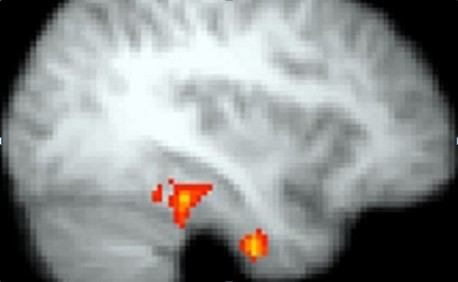
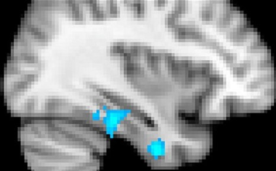

云英语
云英语：因学术而改变

研究人员宣称：“莎士比亚和华兹华斯的作品是大脑的"火箭助推器"，其疗效胜于自助类图书。”
利物浦大学的科学家、心理学家和英语学者们发现，阅读游吟诗人以及其他古典作家的作品能可吸引读者的注意力，时不时触发自我省察，有利于阅读者的思维。
当志愿者阅读威廉?莎士比亚，威廉?华兹华斯和T.S.艾略特和其他作家的作品时，研究者们使用扫描仪监测那些志愿者的脑部活动。
然后研究人员将那些作品弄成更加直白的现代英语后再让志愿者阅读，并继续监测他们的脑部活动。
扫描显示：在活跃思维方面，更“具挑战性的”散文和诗歌远胜于相对平庸的散文和诗歌。
阅读过程中，大脑对每一个词汇作出的反应都被记录下来。遇到不常见词汇、奇怪短语和复杂句式时，大脑思维变得极其活跃。通过分析这些监测记录，科学家们可以研究大脑活动。
相对起初的思维活动，这种思维的极其活跃的状态持续更久，将大脑的思维能力提到更高的档次，并鼓励进一步阅读。
此外，研究发现，特别地，阅读诗歌能促进右脑的思维活动（该部位和“自传式记忆”有关），辅助阅读者根据阅读内容对自身经历进行反思和再评估。学者们认为，这意味着经典作品比自助类图书更有用。
英文教授Philip Davis和利物浦大学的磁共振中心一起致力于这项研究。他将在本周的一次会议上宣布：严肃文学作品是健脑神作！
“研究显示，文学作品可以转变心理通路，创造新想法、新状态和新联想，老少佳宜。”
在研究的第一阶段，30个志愿者先阅读包括《李尔王》、《奥赛罗》、《克里奥兰纳斯》和《麦克白》在内的莎士比亚剧作，然后再将这些作品的简易版读一遍。在这两次阅读过程中他们的大脑活动都被记录下来。

当他们阅读简易版的莎士比亚剧作时，大脑思维活动显示正常。不过，读莎士比亚原作时，因为不熟悉莎翁的用词，他们的思维活跃度猛地飙升。
在一个例子中，志愿者们读《李尔王》中的一句："A father and a gracious aged man: him have you madded"。然后他们阅读这句话的简易版："A father and a gracious aged man: him you have enraged."
比起直白的散文，莎翁将形容词"mad"用作动词，大大激发了大脑思维的活跃度。
研究人员继续探索这种效果的持续时间。结果发现，由陌生词汇引发的思维活跃高峰可以保持至阅读跟在陌生词之后的短语，这表明惹眼的陌生词已经牢牢抓住了读者，使他们准备好更加专注。
和利物浦大学的心理学家一起合作，研究的第二个阶段旨在探究诗歌的治疗效果可以达到什么程度。研究所使用的材料包括威廉・华兹华斯、亨利・沃恩、约翰・多恩、伊丽莎白・巴雷特・勃朗宁、T.S. 艾略特、菲利普・拉金和泰德・休斯等人的作品。
当志愿者阅读华兹华斯的四句诗"She lived unknown and few could know, when Lucy ceased to be. But she is in her grave and oh, the difference to me"时，他们的大脑活动被扫描记录下来。
志愿者也读了这四句诗的简易版："She lived a lonely life in the country, and nobody seems to know or care, but now she is dead, and I feel her loss."
原作版的四句诗激发了更大的大脑思维活动量，它不仅让控制语言的左半脑更活跃，同样刺激了与自传式记忆和情绪相关的右半脑。

大脑这一区域强烈的活动迹象表明，诗歌触发了"再评估机制"，使读者结合所读去反思和省察自身经历。
“诗歌，在风格之外，更是关乎使认知具备情绪和传记要素的人生深层经验。”Davis教授如是说，下周他将在北英格兰教育会议上展示自己的研究发现。
“面对人类重大处境，需要严肃文学作品的认真话语，而非仅仅强调平庸观点和传统自我形象的自助类图书或简易读物。”
志愿者阅读查尔斯?狄更斯的作品时，Davis教授希望能记录下他们的活动，借此验证下狄更斯自己修订后的散文是否能比原作激起更活跃的大脑活动。
现在，他和The Reader Organisation共同致力于在社区 drop-in中心、护理院、监狱、图书馆、学校和母婴组织中建立大声读书小组。
另外，伦敦大学学院合作的联合研究将探讨阅读对痴呆患者的影响。
版权所有 2011-2015 云英语 Y-English All Rights Reserved
地址：北京市海淀区五道口华清嘉园商务会馆802
电话：400-876-3898 010-82863898 82863899 传真：010-82863897